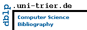

Publications
Disclaimer: This material is presented to ensure timely dissemination of scholarly and technical work. Copyright and all rights therein are retained by authors or by other copyright holders. All persons copying this information are expected to adhere to the terms and constraints invoked by each author's copyright. In most cases, these works may not be reposted without the explicit permission of the copyright holder.
You can also find the code and data along with the full text below.
We gratefully acknowledge the funding from the following agencies and companies that made the research possible:
NSF
DOE Office of Science
NIH
DARPA
IBM (AI Horizon Network and AIRC)
HP (Innovation Research Award)
Google (Faculty Research Award)
NVIDIA (Academic Partnership Award)
You can also find my publications on and .
Datasets
IBM Itemset and Sequence Data Generator: https://github.com/zakimjz/IBMGenerator
Utilities for converting itemset and sequence datasets: https://github.com/zakimjz/tposedb
Synthetic Tree Generator: https://github.com/zakimjz/TreeGen
-
Data for Itemset, Sequence, and Tree Mining: https://doi.org/10.5281/zenodo.3785364
This includes CSLOGS (for tree mining), PlanData (for sequence mining), and several datasets like chess, mushroom, pumsb, T10I4D100K fo itemset mining. Used for CHARM, GenMax and Eclat papers.
-
Protein Graphs Dataset: https://doi.org/10.5281/zenodo.3731768
This contains the PDB graphs from the DistGraph paper.
-
Attribute-Structure Graph Dataset: https://doi.org/10.5281/zenodo.3732152
The datasets from attribute-structure correlated graph mining paper.